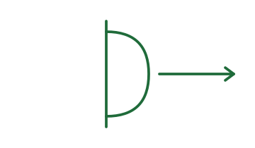

Demoveiledning. Ikke fra produsenten.
Velg sjakkel med samme eller én dimensjon større enn kjettingen, og sjekk at arbeidslasten holder for jobben.
Du trenger: Tang eller fastnøkkel, eventuelt stålvaier eller strips for å sikre bolten
Kjetting på 8 mm passer sjakkel på 8 til 10 mm. Sjekk arbeidslasten (WLL) på begge. Den laveste gjelder.
Legg siste kjettingledd inn i sjakkelen. Skru bolten helt inn til den bunner, så en kvart omdreining tilbake.
Til fortøyning og fast montering: sikre bolten med strips eller tråd gjennom hullet så den ikke kan skru seg ut.
Sjakkelen skal belastes i lengderetningen. Sidebelastning reduserer styrken kraftig.
